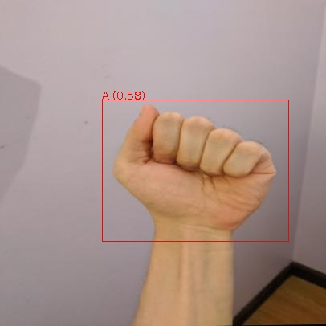
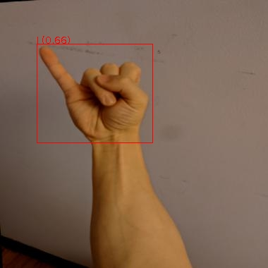

Yolov7
Yolov7 represents the implementation of YOLOv7: Trainable bag-of-freebies sets new state-of-the-art for real-time object detectors. Custom docker images with additional tools are available from here:
https://github.com/waikato-datamining/pytorch/tree/master/yolov7
Prerequisites#
Make sure you have the directory structure created as outlined in the Prerequisites.
Data#
In this example, we will use the American Sign Language Letters dataset, which consists of sets of images of hands, one per letter in the English alphabet (26 labels).
Download the dataset from the following URL into the data directory and extract it:
Once extracted, rename the voc directory to sign-voc.
Now we have to convert the format from VOC XML into YOLO. We can do this by using the image-dataset-converter library. At the same time, we can split the dataset into train, validation and test subsets.
From within the applied_deep_learning directory, run the following command:
docker run --rm -u $(id -u):$(id -g) \
-v `pwd`:/workspace \
-t waikatodatamining/image-dataset-converter:0.0.1 \
idc-convert \
-l INFO \
from-voc-od \
-i "/workspace/data/sign-voc/*.xml" \
to-yolo-od \
-o /workspace/data/sign-yolo-split \
--labels /workspace/data/sign-yolo-split/labels.txt \
--labels_csv /workspace/data/sign-yolo-split/labels.csv \
--split_names train val test \
--split_ratios 70 15 15
Finally, download the dataset7.yaml file, place it in the sign-yolo-split
directory. It contains information about the dataset directory, the splits and the class labels.
Since the labels can come out in a random order, you need to update the labels in the yaml file
with the ones that got output in the labels.txt file. You can automatically quote the
comma-separated list using the following command:
cat data/sign-yolo-split/labels.txt | sed s/,/\',\'/g | sed s/^/\'/g | sed s/$/\'/g
Training#
For training, we will use the following docker image:
waikatodatamining/pytorch-yolov7:2022-10-08_cuda11.1
If you do not have a GPU, you can use the CPU-only image:
waikatodatamining/pytorch-yolov7:2022-10-08_cpu
The training script is called yolov7_train, for which we can invoke the help screen as follows:
docker run --rm -t waikatodatamining/pytorch-yolov7:2022-10-08_cuda11.1 yolov7_train --help
Since we will be performing transfer larning, we need to download a base model to use for training.
Yolov7 offers different models, which differ in speed and accuracy. We will use the fastest one
called yolov7_training.pt from the v0.1 release:
https://github.com/WongKinYiu/yolov7/releases/download/v0.1/yolov7_training.pt
Download it and place it in the models directory.
It is good practice creating a separate sub-directory for each training run, with a directory name that hints at
what dataset and model were used. So for our first training run, which will use mainly default parameters, we will
create the following directory in the output folder:
sign-yolov7
Next, we need to download two more configuration files into our output directory:
-
yolov7.yaml (architecture)
adjust the
ncparameter and just 26 instead of 80 -
here you can adjust training parameters and also tweak basic image augmentation methods
Since the image size should be a multiple of 32, we use 416 for this experiment.
Kick off the training with the following command:
docker run --rm \
-u $(id -u):$(id -g) \
--shm-size 8G \
--gpus=all \
-v `pwd`:/workspace \
-t waikatodatamining/pytorch-yolov7:2022-10-08_cuda11.1 \
yolov7_train \
--workers 1 \
--device 0 \
--batch-size 8 \
--epochs 50 \
--data /workspace/data/sign-yolo-split/dataset7.yaml \
--img 416 416 \
--weights /workspace/models/yolov7_training.pt \
--project /workspace/output \
--name sign-yolov7 \
--exist-ok \
--hyp /workspace/output/sign-yolov7/hyp.scratch.custom.yaml \
--cfg /workspace/output/sign-yolov7/yolov7.yaml
Predicting#
Using the yolov7_predict_poll script, we can batch-process images placed in the predictions/in directory
as follows (e.g., from our test subset):
docker run --rm \
-u $(id -u):$(id -g) \
--gpus=all \
-v `pwd`:/workspace \
-t waikatodatamining/pytorch-yolov7:2022-10-08_cuda11.1 \
yolov7_predict_poll \
--model /workspace/output/sign-yolov7/weights/best.pt \
--no_trace \
--prediction_in /workspace/predictions/in \
--prediction_out /workspace/predictions/out
Notes
-
By default, the predictions get output in ROI CSV format. But you can also output them in the OPEX JSON format by adding
--prediction_format opex --prediction_suffix .jsonto the command. -
You can view the predictions with the ADAMS Preview browser:
Example prediction


Exporting to ONNX (optional)#
Before we can use our trained model, we will need to export it to ONNX format
using the yolov7_export script:
docker run --rm \
-u $(id -u):$(id -g) \
--gpus=all \
-v `pwd`:/workspace \
-t waikatodatamining/pytorch-yolov7:2022-10-08_cuda11.1 \
yolov7_export \
--weights /workspace/output/sign-yolov7/weights/best.pt \
--grid \
--end2end \
--simplify \
--topk-all 26 \
--iou-thres 0.65 \
--conf-thres 0.35 \
--img-size 416 416 \
--max-wh 416
This will create a file called best.onnx in the output directory.
Troubleshooting#
- If you are re-using a dataset that was used by another YolovX framework, you
may get strange error messages when reading the data. This can be due to
incompatible cache files that get generated to speed up loading the data.
Make sure to remove all files in the
labelsdirectory that have a.cacheextension.